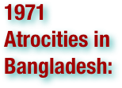
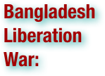

Genocide in Bangladesh: Terms
Please scan the terms to find what you are looking for - they are not in order!
.pdf (. . . )


Bangladesh, officially the People's Republic of Bangladesh is a sovereign state located in South Asia. It is bordered by India on all sides except for a small border with Burma (Myanmar) to the far southeast and by the Bay of Bengal to the south. Together with the Indian state of West Bengal, it makes up the ethno-linguistic region of Bengal. The name Bangladesh means "Country of Bengal" in the official Bengali language. The borders of present-day Bangladesh were established with the partition of Bengal and India in 1947, when the region became East Pakistan, part of the newly formed nation of Pakistan. However, it was separated from the western wing by 1,600 km (994 mi) of Indian territory. Due to political exclusion, ethnic and linguistic discrimination, and economic neglect by the politically-dominant West Pakistan, popular agitation grew against West Pakistan and led to the Bangladesh Liberation War in 1971, which the Bengali people won with the support of India. After independence, the new state endured famines, natural disasters and widespread poverty, as well as political turmoil and military coups. The restoration of democracy in 1991 has been followed by relative calm and economic progress. Bangladesh is a parliamentary democracy, with an elected parliament called the Jatiyo Sangshad. It is the eighth most populous country and among the most densely populated countries in the world. A high poverty rate prevails, although the United Nations has acclaimed Bangladesh for achieving tremendous progress in human development. Geographically, the country straddles the fertile Ganges-Brahmaputra Delta and is subject to annual monsoon floods and cyclones. The country is listed among the Next Eleven economies and Global Growth Generator countries. It is a founding member of the South Asian Association for Regional Cooperation, the D-8 and BIMSTEC, and a member of the Commonwealth of Nations, the Organisation of the Islamic Conference and the Non-Aligned Movement. However, Bangladesh continues to face a number of major challenges, including widespread political and bureaucratic corruption, economic competition relative to the world, serious overpopulation, widespread poverty, and an increasing danger of hydrologic shocks brought on by ecological vulnerability to climate change. (wikipedia.org)


Beginning with the start of Operation Searchlight on 25 March 1971 and continuing throughout the Bangladesh Liberation War, there were widespread violations of human rights in East Pakistan (now Bangladesh) perpetrated by the Pakistan Army, with support from local political and religious militias. Time reported a high U.S. official as saying "It is the most incredible, calculated thing since the days of the Nazis in Poland." Bangladeshi authorities claim that 3 million people were killed, while the Hamoodur Rahman Commission, an official Pakistan Government investigation, put the figure as low as 26,000 civilian casualties. The international media and reference books in English have also published figures which vary greatly from 200,000 to 3,000,000 for Bangladesh as a whole. A further eight to ten million people fled the country to seek safety in India. Many of the murdered intellectuals were victims of the collaborators within the West Pakistan Army: Razakars, Al-Shams and Al-Badr forces, at the instruction of the Pakistani Army. There are many mass graves in Bangladesh, and more are continually being discovered (such as one in an old well near a mosque in Dhaka, located in the non-Bengali region of the city, which was discovered in August 1999). The first night of war on Bengalis, which is documented in telegrams from the American Consulate in Dhaka to the United States State Department, saw indiscriminate killings of students of Dhaka University and other civilians. Numerous women were raped, tortured and killed during the war. The exact numbers are not known and are a subject of debate with some sources quoting figures as high as 400,000. One of the more horrible revelations concerns 563 young Bengali women, some only 18, who were held captive inside Dhaka's dingy military cantonment since the first days of the fighting. They were seized from Dhaka University and private homes and forced into military brothels, with some of the women carrying war babies being released. There was significant sectarian violence not only perpetrated by the West Pakistani army, but also by Bengali nationalists against non-Bengali minorities, especially Biharis. On 16 December 2002, the George Washington University's National Security Archive published a collection of declassified documents, consisting mostly of communications between US embassy officials and USIS centers in Dhaka and India, and officials in Washington DC. These documents show that US officials working in diplomatic institutions within Bangladesh used the terms selective genocide and genocide (see The Blood Telegram) to describe events they had knowledge of at the time. The complete chronology of events as reported to the Nixon administration can be found on the Department of State website. Every major publication and newspaper in Bangladesh and some international publications on genocide and human rights abuses use the term genocide to describe the event. (wikipedia.org)

Hindu refers to an identity associated with the philosophical, religious and cultural systems that are indigenous to the Indian subcontinent. As used in the Constitution of India, the word "Hindu" is also attributed to all persons professing any Indian religion (i.e. Hinduism, Jainism, Buddhism or Sikhism). In common use today, it refers to an adherent of Hinduism. With more than a billion adherents, Hinduism is the world's third largest religion. The vast majority of Hindus, approximately 940 million, live in India. Other countries with large Hindu populations include Nepal, Bangladesh, Mauritius and the island of Bali. (wikipedia.org)

. . . East Pakistan, was a provincial state of Pakistan established in 14 August 1947. The provincial state existed until 16 December 1971 and it is now the independent nation of Bangladesh. East Pakistan was created from Bengal Province based on the 'Mountbatten Plan' in what was then British India in 1947. Eastern Bengal was given to the Dominion of Pakistan and became a province of Pakistan by the name East Bengal. East Bengal was renamed East Pakistan in 1956 and later became the country of Bangladesh after the bloody Bangladesh Liberation War in 1971, which took place after the General Elections of 1970. The East Pakistan had an area of 147,570 km2 (56,977 mi2), bordering India on all three sides (East, North, and West) and Bay of Bengal from South. East Pakistan was one of the largest provincial state of Pakistan, with largest population and shared a largest economic share. In 1971 a violent Liberation war ended the writ of Pakistan, and Pakistan was divided as a result of Indo-Pakistani War of 1971. Finally, on 15 December 1971, East Pakistan was officially disestablished and became an independent state of Bangladesh. (wikipedia.org)

West Pakistan . . . was the popular and sometimes official (1955–1970) name of the western wing of Pakistan until 1971 when the eastern wing became independent as Bangladesh. The politically dominant western wing was composed of three Governor's provinces (North-West Frontier, West Punjab and Sind), one Chief Commissioner's province (Baluchistan), the Baluchistan States Union, several other princely states (notably Bahawalpur, Chitral, Dir, Hunza, Khairpur and Swat), the Federal Capital Territory (around Karachi) and the tribal areas. The eastern wing formed the single province of East Bengal (including the former Assam district of Sylhet), which despite having over half of the population had a disproportionately small number of seats in the Constituent Assembly. This inequality of the two wings and the geographical distance between them was believed to be holding up the adoption of a new constitution. To diminish the differences between the two regions, the government decided to reorganise the country as two distinct provinces under the One Unit policy announced by Prime Minister Chaudhry Muhammad Ali on 22 November 1954. (wikpedia.org)


The Bangladesh Liberation War was an armed conflict pitting East Pakistan and India against West Pakistan. The war resulted in the secession of East Pakistan, which became the independent nation of Bangladesh. The war broke out on 26 March 1971 as army units directed by West Pakistan launched a military operation in East Pakistan against Bengali civilians, students, intelligentsia, and armed personnel who were demanding separation of the East from West Pakistan. Bengali military, paramilitary, and civilians formed the Mukti Bahini ("Liberation Army") and used guerrilla warfare tactics to fight against the West Pakistan army. India provided economic, military and diplomatic support to the Mukti Bahini rebels, leading Pakistan to launch Operation Chengiz Khan, a pre-emptive attack on the western border of India which started the Indo-Pakistani War of 1971. On 16 December 1971, the allied forces of the Indian army and the Mukti Bahini defeated the West Pakistani forces deployed in the East. The resulting surrender was the largest in number of prisoners of war since World War II. (wikipedia.org)

The Bengali Language Movement, also known as the Language Movement, was a political effort in Bangladesh (then known as East Pakistan), advocating the recognition of the Bengali language as an official language of Pakistan. Such recognition would allow Bengali to be used in government affairs. When the state of Pakistan was formed in 1947, its two regions, East Pakistan (also called East Bengal) and West Pakistan, were split along cultural, geographical, and linguistic lines. In 1948, the Government of Pakistan ordained Urdu as the sole national language, sparking extensive protests among the Bengali-speaking majority of East Pakistan. Facing rising sectarian tensions and mass discontent with the new law, the government outlawed public meetings and rallies. The students of the University of Dhaka and other political activists defied the law and organized a protest on 21 February 1952. The movement reached its climax when police killed student demonstrators on that day. The deaths provoked widespread civil unrest led by the Awami Muslim League, later renamed the Awami League. After years of conflict, the central government relented and granted official status to the Bengali language in 1956. In 2000, UNESCO declared 21 February International Mother Language Day for the whole world to celebrate, in tribute to the Language Movement and the ethno-linguistic rights of people around the world. The Language Movement catalyzed the assertion of Bengali national identity in Pakistan, and became a forerunner to Bengali nationalist movements, including the 6-point movement and subsequently the Bangladesh Liberation War in 1971. In Bangladesh, 21 February is observed as Language Movement Day, a national holiday. The Shaheed Minar monument was constructed near Dhaka Medical College in memory of the movement and its victims. (wikipedia.org)

The Bengali people are an ethnic community native to the historic region of Bengal (now divided between Bangladesh and India) in South Asia. They speak Bengali, which is an Indo-Aryan language of the eastern Indian subcontinent, evolved from the Magadhi Prakrit and Sanskrit languages. In their native language, they are referred to as Bangali. They primarily belong to Indo-Aryan and Mongolo-Dravidian stock,and are closely related to Austro-Asiatic, Dravidian, Assamese, Sinhalese, Munda, Tibeto-Burman linguistic/ethnic stocks. As such, Bengalis are a homogeneous but considerably diverse ethnic group with heterogeneous origins. They are the second largest single ethnic group in the world. They are mostly concentrated in Bangladesh and the states of West Bengal and Tripura in India. There are also a number of Bengali communities scattered across North-East India, New Delhi, and the Indian states of Assam, Jharkhand, Bihar, Maharastra, Karnataka, Kerala, Andhra Pradesh, Madhya Pradesh, Uttar Pradesh and Orissa. In addition, there are significant Bengali communities beyond South Asia; some of the most well established Bengali communities are in the United Kingdom and United States. Large numbers of Bengalis (mainly from Sylhet) have settled in Britain, mainly living in the East boroughs of London, numbering from around 300,000; in the USA there are about 150,000 living across the country, mainly in New York. There are also millions living across the Gulf States, majority of whom are living as foreign workers. There are also many Bengalis in Pakistan, Malaysia, South Korea, Canada, Japan, Australia and many other countries. (wikipedia.org)

Operation Searchlight was a planned military operation carried out by the Pakistan Army to curb the Bengali nationalist movement in the erstwhile East Pakistan in March 1971. Ordered by the central government in West Pakistan, this was seen as the sequel to "Operation Blitz" which had been launched in November 1970. The original plan envisioned taking control of the major cities on March 26, and then eliminating all opposition, political or military, within one month. Prolonged Bengali resistance was not anticipated by the Pakistani planners. The main phase of Operation Searchlight ended with the fall of the last major town in Bengali hands in mid-May. The operation also precipitated the 1971 Bangladesh atrocities and caused roughly 10 million refugees to flee to India. These systematic killings enraged the Bengalis, who declared independence from Pakistan, to achieve the new state of Bangladesh with Indo-Soviet backing. The violence resulting from Operation Searchlight led to the war of liberation by the Mukti Bahini against Pakistani "occupation" forces in Bangladesh. Following the ill fated Operation Chengiz Khan, Indian intervention resulted in the Pakistani Army's unconditional surrender to the joint command of the Indian Army and Mukti Bahini on December 16, 1971. (wikipedia.org)

The Hamoodur Rahman commission was constituted by Pakistan Government to investigate the Bangladesh atrocities during the Bangladesh Liberation War and the military and political causes of the country's defeat in the 1971 war. It was asked to investigate "the circumstances in which the Commander, Eastern command, surrendered and the members of the Armed Forces of Pakistan under his command laid down their arms and a cease-fire was ordered along the borders of West Pakistan and India and along the cease-fire line in the State of Jammu and Kashmir." The report was very critical of the role of Pakistan's military and politicians and its publication was disallowed at the time. (wikipedia.org)

The Blood telegram (April 6, 1971) was seen as one of the most strongly worded Dissent Channel messages ever written by Foreign Service Officers to the State Department. It was signed by 29 Americans. The telegram stated: "Our government has failed to denounce the suppression of democracy. Our government has failed to denounce atrocities. Our government has failed to take forceful measures to protect its citizens while at the same time bending over backwards to placate the West Pak[istan] dominated government and to lessen any deservedly negative international public relations impact against them. Our government has evidenced what many will consider moral bankruptcy,(...) But we have chosen not to intervene, even morally, on the grounds that the Awami conflict, in which unfortunately the overworked term genocide is applicable, is purely an internal matter of a sovereign state. Private Americans have expressed disgust. We, as professional civil servants, express our dissent with current policy and fervently hope that our true and lasting interests here can be defined and our policies redirected. (U.S. Consulate (Dacca) Cable, Dissent from U.S. Policy Toward East Pakistan, April 6, 1971, Confidential, . . . ) In an earlier telegram (March 27, 1971), Blood wrote about American observations at Dhaka under the subject heading "Selective genocide": "1. Here in Decca we are mute and horrified witnesses to a reign of terror by the Pak[istani] Military. Evidence continues to mount that the MLA authorities have list of AWAMI League supporters whom they are systematically eliminating by seeking them out in their homes and shooting them down; 2. Among those marked for extinction in addition to the A.L. hierarchy are student leaders and university faculty. In this second category we have reports that Fazlur Rahman head of the philosophy department and a Hindu, M. Abedin, head of the department of history, have been killed. Razzak of the political science department is rumored dead. Also on the list are the bulk of MNA's elect and number of MPA's. 3. Moreover, with the support of the Pak[istani] Military. non-Bengali Muslims are systematically attacking poor people's quarters and murdering Bengalis and Hindus. (U.S. Consulate (Dacca) Cable, Selective genocide, March 27, 1971) Although Blood was scheduled for another 18 month tour in Dhaka, President Richard M. Nixon and Secretary of State Henry Kissinger recalled him from that position since his opposition went against their hopes of using the support of West Pakistan for diplomatic openings to China and to counter the power of the Soviet Union. (wikipedia.org)